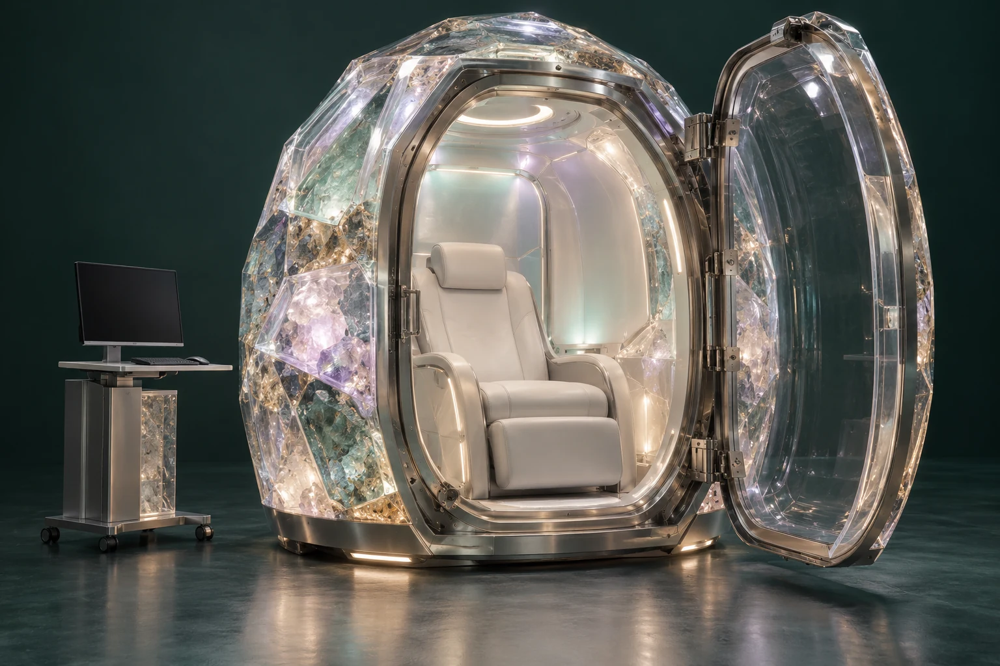

PATHWAY 03 / CRYSTALLINE, FUSED QUARTZ & BLENDS · VERSION 2
Shape light, sound and structure.
Ordered minerals, fused-silica components and crystal-rich blends offer different fabrication routes. Each assembly is named for its measured material structure; compute remains separate.
Crystal and glass have different structures.
Crystalline quartz has long-range atomic order. Fused quartz or fused silica is an amorphous silica glass. A transparent surface alone does not establish crystallinity. The source Version 2 includes bonded mosaics, crystal-rich ceramics, controlled glass-ceramics and grown components; this atlas includes fused-quartz routes in the family you requested.
The interface becomes a design variable.
Recipes describe phases, grain sizes, orientation, interfaces and porosity. Small specimens compare bonding, crystal fraction or orientation within a repeatable geometry. Witness samples and manufacturing spread show how closely the intended structure was achieved.
A field worth measuring.
The material twin locates every panel, cassette, seam and interface. Optical tests record wavelength, geometry, transmission, reflection, scattering and polarisation. Acoustic tests record source and microphone positions, decay and vibration. Reports of felt resonance have a participant and a context.
- Bond preparation, joining medium, cure or heat treatment and inspection.
- Fracture path, interface separation and thermal cycling.
- Moisture, cleaning and drift over the component lifecycle.
- A predicted property, manufactured specimen and measured outcome.
A meaningful blend remains traceable.
An aquamarine and agate expression theme or a jade and gold continuity theme has a personal interpretation record. The physical assembly has a Material Composition ID. A changing story leaves the actual configuration history intact.
A complete experience before embedded compute.
Version 2 advances reproducible mineral architecture and mapped optical and acoustic behaviour. Accessible local enclosures and agreed hub resources still carry the computation. Computational regions belong to the next research pathway.
Emergency egress is an acceptance gate.
Entry, door operation, assisted transfer and emergency extraction must conform to the applicable requirements for the actual chamber and site. The project retains dimensioned evidence, a reviewed emergency procedure and rehearsed acceptance before participant use. The dedicated entry and egress chapter follows this requirement across every pathway.